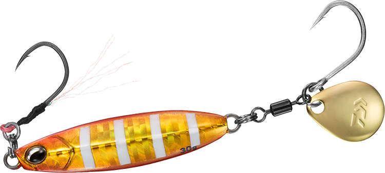
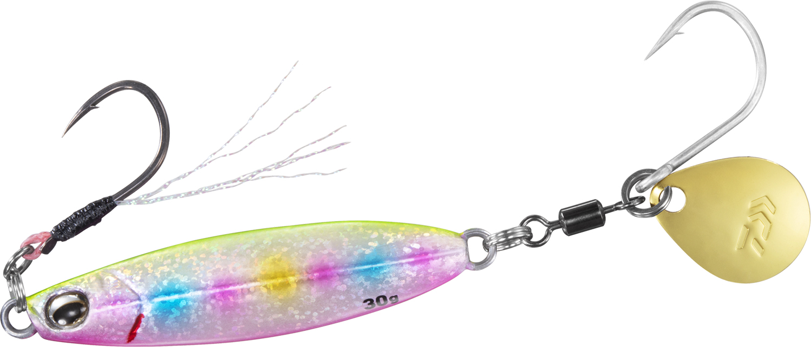
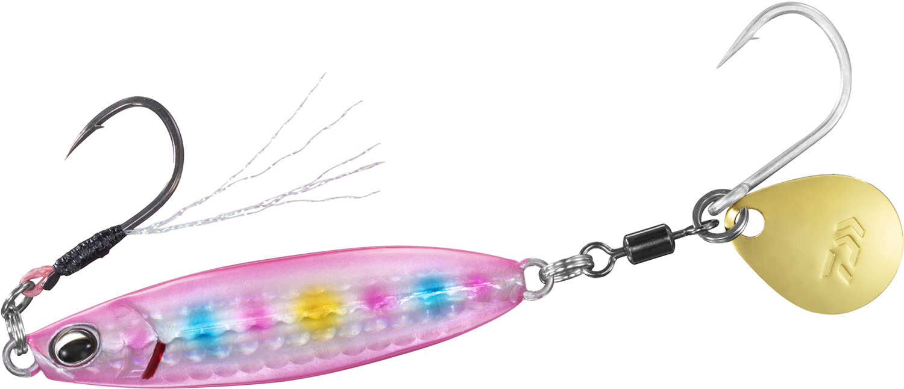
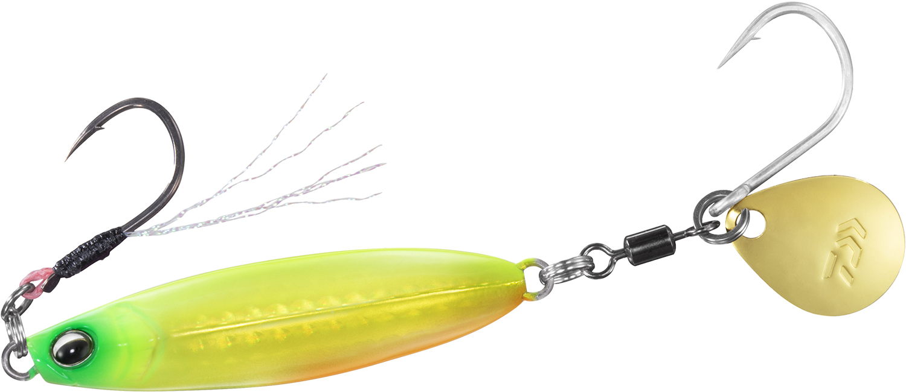

サムライジグR スピン
（SAMURAI JIG R SPIN）
サムライジグR スピンはDAIWA（ダイワ）のブレードジグです。
サワラのブレードジギングに対応したコンパクトなジグで、安定感のある低重心ボディと小型ブレードで超早巻きに対応します。フロントアシストフックも付いているので、サワラ・サゴシだけでなく、根魚や青物を狙うショアスロージギングにも使える多目的なブレードジグです。

画像出典:ダイワ公式HP
スペック
- メーカー
- DAIWA（ダイワ）
- タイプ
- ブレードジグ（スピンテールジグ）
- 重さ／全長
- 30g／60mm、40g／65mm
- 素材
- 鉛
- フック
- フロント：イセアマ#13（サクサスアシストフック）／リア：太軸#14
- ターゲット
- サワラ・サゴシ・青物・根魚
- 価格
- 950円（30g）／1,000円（40g）（税別）
▼今すぐチェック
サムライジグR スピンの特徴
超早巻きにも、スローな誘いにも使えるオールシーズン対応のブレードジグ
-
超早巻きに対応する小型ブレード
超早巻きでもアングラーに負担が少ない小型ブレードを搭載。ブレードが小さいので飛行姿勢への影響も少なく、安定した飛距離が出せます。ブレードのキラメキと波動がサゴシ・サワラに効果を発揮します。
-
安定感のある低重心ボディ
低重心のコンパクトボディで、速く巻いても姿勢が安定。早巻きだけでなく、スローな誘いもできる多目的なジグです。
-
サクサスのフロントアシストフック
フロントにはティンセル付きのサクサスアシストフック、リアには大物の引きにも耐える太軸シングルフックを搭載。フロントアシストでフォール中のアタリも取れるので、根魚や青物のショアスロージギングにも対応します。
サムライジグR スピンの使い方
サワラ・サゴシ狙いでは、キャストしてボトムを取り、高速でただ巻きするのが基本。サワラ・サゴシを専門に狙うときは、リアフックに掛けるため、フロントアシストを外すことがメーカーからも推奨されています。
根魚や青物を狙うときはフロントアシストを付けたまま、リフト＆フォールのスローな誘いでフォール中のアタリを取りましょう。
サムライジグR スピンの得意な状況
堤防・サーフからのサゴシ・サワラ狙いや、ボートでのサワラキャスティング。根魚や青物を狙うショアスロージギングにも使えるので、「サワラが回ってくるまでは根魚を狙う」といった1日の釣りにも1本で対応できます。
ワンポイント
バラシを減らすダブルフック仕様の「サムライジグR スピン ダブルフック」もあります。サワラ・サゴシに専念するならダブルフック仕様、根魚や青物も狙うならフロントアシスト付きの通常モデル、と使い分けるのがおすすめです。
重さの使い分け
| 重さ | 全長 | 使いどころ |
|---|---|---|
| スピン30 | 60mm | 堤防・サーフのサゴシ狙いや、浅い場所に |
| スピン40 | 65mm | 少し深い場所や、遠投したいとき、ボートのサワラ狙いに |
サムライジグRシリーズには、スローフォールやSS（スロースイマー）などのモデルもあります。
人気カラー
多数のカラーラインナップから4色を紹介します（カラー名は公式の表記のまま。重さによって無いカラーもあります）。

PHアカキンゼブラアカキンにゼブラ模様。朝夕のマヅメ時や、濁りのある日に。

サゴシ不夜城サゴシの名前が付いた追加カラーのひとつ。ほかのカラーに反応しないときのローテーションに。

ピンクキャンディピンクのキャンディカラー。濁り潮や曇りの日のアピールに（2026年追加カラー）。

サンライズチャートチャートベースで視認性の高いカラー。朝マヅメや濁りのある日に（2026年追加カラー）。
画像出典:ダイワ公式HP
サムライジグR スピンに似ているルアー
-
 Zブレード
ジーク
詳細はこちら＞
Zブレード
ジーク
詳細はこちら＞
亜鉛合金のブレードジグ。ゆっくりフォールさせて、青物やヒラメも狙いたいときに。
-
 ドラッグメタル ブレッチ
DUO
詳細はこちら＞
ドラッグメタル ブレッチ
DUO
詳細はこちら＞
30〜50gのサワラ専用ブレードジグ。同じくらいのサイズで、ダブルフックでサワラに専念したいときに。
-
 TGストライク
ブルーブルー
詳細はこちら＞
TGストライク
ブルーブルー
詳細はこちら＞
45gのタングステンブレードジグ。もっと小さいシルエットで遠投したいときに。